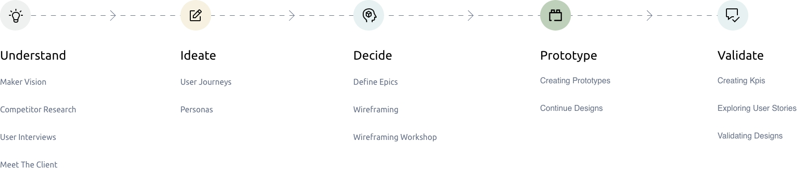

Case Study
My Role at
Mendix


Case Study - AuditON
Mendix is a low-code app development platform from Rotterdam. It’s focused building enterprise solutions faster, shortening the lines between business and development. Here I’m currently working as a UX Designer within the “app factories”, creating internal (B2B) solutions for Mendix and Siemens AG. I’ve worked with agile teams to design and create applications from idea to production from 2-5 months per app (depending on the cycles and requirements). I lead the UX of each project, including usability tests, interviews, and wireframing, ensuring the best possible product and experience for our Siemens/Mendix internal clients. When required, I also implement CSS and basic implementation with the Mendix Studio software.
The design process
subtitle text goes here
Empathising with the client
The team worked closely with the client to understand their goals, challenges, and pain points. This includes stakeholder interviews, reviewing existing data, and researching trends.
User Interviews
Gather qualitative feedback and insights directly from users.
Creating Personas
Developing fictional characters that represent the users of a product or service. Personas help designers better understand and empathize with the user’s goals, needs, and behaviors, resulting in a more user-centered design and better user experience.
User Journeys
Creating a visualization of the steps a user takes to accomplish a goal, which helps the team understand & identify their pain points and areas for improvement.
Wireframes
Creating a basic visual representation of the UI. This focuses on layout and functionality, to explore and communicate early design concepts.
Mockups